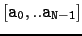
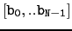
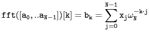
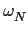

suivant: L'inverse de la transformée
monter: Transformée de Fourier
précédent: Où interviennent ces sommes
Table des matières
Index
La transformée de Fourier rapide : fft
fft a comme argument une liste (ou une séquence)
 où N est une puissance de deux.
fft renvoie la liste
 tel que pour k=0..N-1
on ait :

avec  racine N-ième de l'unité.
On tape :
fft(0,1,1,0)
On obtient :
[2.0, -1-i, 0.0, -1+i]
On peut aussi travailler sur un corps fini
 /p, en indiquant une
racine N-ième primitive de l'unité en 2ième argument
et p en 3ième argument de fft. Par exemple
on verifie que 22798 est une racine primitive d'ordre 128 de 1
modulo 35969.
Par exemple, calculons par FFT le carré d'un polynôme à
coefficients
entiers aléatoire inférieur à 10, de degré 60,
représenté par la liste de ses coefficients par ordre croissant
complété par des 0 pour avoir une liste de taille N = 128 :
/p, en indiquant une
racine N-ième primitive de l'unité en 2ième argument
et p en 3ième argument de fft. Par exemple
on verifie que 22798 est une racine primitive d'ordre 128 de 1
modulo 35969.
Par exemple, calculons par FFT le carré d'un polynôme à
coefficients
entiers aléatoire inférieur à 10, de degré 60,
représenté par la liste de ses coefficients par ordre croissant
complété par des 0 pour avoir une liste de taille N = 128 :
P:=poly1[op(ranm(1,60,10)[0]),0$68];
p:=fft(P,22798,35969)
il suffit maintenant de calculer le produit terme à terme de p
avec
lui-même et d'en calculer la FFT inverse
Q:=ifft(p .* p,22798,35969)
suivant: L'inverse de la transformée
monter: Transformée de Fourier
précédent: Où interviennent ces sommes
Table des matières
Index
Documentation de giac écrite par Renée De Graeve